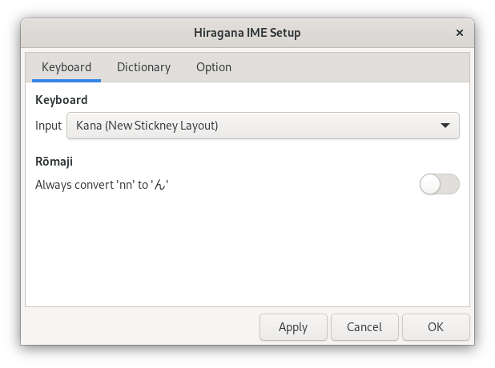

Settings
Hiragana IME Setup Window
You can customize the Hiragana IME in the Hiragana IME Setup window. To open the Hiragana IME Setup window, select Setup from the keyboard menu in the desktop top bar.


The Hiragana IME Setup window has the following three tabs:
| Description | |
|---|---|
| Keyboard | Switch between Kana input and Rōmaji input. |
| Dictionary | Select the kanji dictionary. |
| Option | Choose the optional settings. |
Keyboard Tab
In the Keyboard tab, you can select the Japanese input method using the keyboard.
Choose the Japanese input method you like from the Input drop-down list:
| Input | Description |
|---|---|
| Rōmaji | Use Rōmaji. |
| Kana (JIS Layout) | Use the standard JIS Kana layout. |
| Use New Stickney Kana layout. |
Rōmaji input and Kana input are commonly used when entering Japanese sentences using the keyboard. Rōmaji input is taught in the third grade at school. You can use Kana input even if you are unfamiliar with Rōmaji. Using Kana input, you can enter Japanese sentences with fewer keystrokes than using Rōmaji input.
Always convert 'nn' to 'ん'
If you want to enter 'ん' by typing nn, enable Always convert 'nn' to 'ん' option.
| Option | Input | Output |
|---|---|---|
| Enabled | konnnitiha | こんにちは |
| Disabled | konnitiha | こんにちは |
If you have been using word processors for a long time, you would be familiar with this behavior. However, this nn method was deprecated in 2009 at JIS, and currently, no standard validates this convention. The correct Rōmaji spelling for 'ん' is n, or n' if 'n' is followed by one of 'aiueoy'.
Hint: You can also enter 'ん' by pressing the Enter key after 'n'.
Dictionary Tab
In the Dictionary tab, you can configure the dictionaries for kana-kanji conversion. The Hiragana IME offers dictionaries for elementary, middle, and high school students, as well as adults.

Kanji Dictionary
Choose the Kanji dictionary you like to use from the Kanji Dictionary drop-down list. The grade-specific dictionary is structured according to the table provided by MEXT. As students move up each grade, they learn more kanji characters; consequently, the number of kanji words in the dictionary also increases.
| Kanji Dictionary | Number of Words |
|---|---|
| 1st grade | 722 |
| 2nd grade | 3,191 |
| 3rd grade | 6,291 |
| 4th grade | 9,523 |
| 5th grade | 12,536 |
| 6th grade | 14,763 |
| 7-9 grades | 29,891 |
| 10-12 grades | 31,989 |
| Adults | 34,502 |
(As of July, 2024)
Choose a dictionary based on the reader's grade level. For personal names and place names, dictionaries for middle school students and above use kanji not listed in the list of Chinese characters in common use, known as the Jōyō Kanji Table.
User Dictionary Name
You can add words to your personal dictionary if you can not find a word in the Hiragana IME dictionary. You may switch among multiple user dictionaries.
Enter the preferred user dictionary file name in the User Dictionary Name textbox.
By default, 'my.dic' is used.
Your dictionaries are stored in the directory ~/.local/share/ibus-hiragana/.
Click Edit to edit your dictionary. The file format of the personal dictionary is described later in "Editing Personal Dictionaries" on this page.
Use permissible okurigana
Okurigana are hiragana suffixes attached to words written with kanji characters. Guidelines on using okurigana have been issued as a public notice through the Prime Minister in Japan. Children learn these rules at school.
In practice, there are variations in okurigana. Turn on the Use permissible okurigana switch to use permissible okurigana.
Examples:
| Main rules | Permissible rules |
|---|---|
| ãŠå¤‰æ›ã¨ã™ → 落とす | ãŠã¨å¤‰æ›ã™ → è½ã™ |
| ãŠã“ãªå¤‰æ›ã£ã¦ → 行って | ãŠã“変æ›ãªã£ã¦ → 行なって |
| ã¨ã©å¤‰æ›ã‘ã§å¤‰æ› → 届け出 | ã¨ã©ã‘ã§å¤‰æ› → 届出 |
Understanding the okurigana rules can be quite challenging. Without furigana, '行って' and '行って' cannot be distinguished by the main rules alone. On the other hand, people who are knowledgeable about kanji do not struggle with reading 'è½ã™'. The public notice does not mandate using kanji; it simply provides guidelines on how to add or remove okurigana when using kanji. In the Japanese version of this guide, most Japanese words are written only in hiragana.
Clear input history
Frequently used homonyms and words with shortened readings will appear at the beginning of the candidate list. To reset the orders to the initial state, turn on the Clear input history switch and click Apply.
Option Tab
You can customize the input assistance feature.

Use half-width digits for Arabic numerals
When enabled, the Hiragana IME enters Arabic numerals using half-width letters, even in Hiragana mode.
| Setting | Example |
|---|---|
| Off | １２、３４５。６７８ |
| On | 12,345.678 |
Combine '^' to the previous vowel character in alphanumeric mode
Enable this option if you want to write Japanese in Kunrei-shiki Rōmaji. When you type ^ after a vowel character in Alphanumeric mode, it is combined into a single character.
- Example: a^ → â
When you type ^ after a vowel character combined with a circumflex, it is separated back into a vowel and '^'.
- Example: â^ → a^
Combine '~' to the previous vowel character in alphanumeric mode as '¯'
Enable this option if you want to write Japanese in Hepburn romanization. When you type ~ after a vowel character in Alphanumeric mode, it is combined into a single character as '¯'.
- Example: a~ → ā
When you type ~ after a vowel character combined with a macron, it is separated back into a vowel and '~'.
- Example: ā~ → a~
Use LLM for candidate selection
LLM stands for Large Language Model. When enabled, the Hiragana IME calculates the probabilities of each candidate's occurrence in the surrounding text and pre-selects the most probable candidate in the candidate window.
For example, when converting 'のぼる', the pre-selected candidate changes as below depending on the surrounding text:
- å±±ã«ç™»ã‚‹
- æ—¥ãŒæ˜‡ã‚‹
Note: Since pre-selection is merely based on a probability calculation, the desired candidate may not always be chosen. This feature is disabled by default because it requires a relatively large amount of computational power. To enable this feature, you also need to install several packages. For more details, please see Installation of Additional Components for Using a Large Language Model.
Editing Personal Dictionaries
The personal dictionary files are text files using the following format.
; Lines starting with a semicolon (;) are comments.
; To add a word, write the reading, followed by a space, and then the word
; enclosed by slashes (/).
きれい /綺麗/
; When you prefix the reading with a minus sign (-), you can revoke words
; in the system dictionary.
-きれい /奇麗/
; Words with the same reading can be added together in one line.
かいざん /改竄/改ざん/
; The reading section of a word with okurigana contains only the hiragana
; part to be replaced with kanji and terminated with a horizontal bar (―).
ささや― /囁k/
あお― /碧i/
Adding words with okurigana (for Advanced Users Only)
In user dictionaries, the reading section of a word with okurigana contains only the hiragana part to be replaced with kanji and terminated with a horizontal bar (―).
The format of the word section changes based on its grammatical part of speech and conjugation type, as described below.
For verbs with Godan conjugation:
In the word section, write kanji, okurigana up to (if any) the conjugative suffix, and one of the conjugative suffix symbols: kgstnbmrw.
| Gyō | Reading Section | Word Section |
|---|---|---|
| か (ka) gyō | か― | 書k |
| ㌠(ga) gyō | およ― | 泳g |
| さ (sa) gyō | ち― | 散らs |
| 㟠(ta) gyō | う― | 打t |
| 㪠(na) gyō | し― | æ»n |
| ば (ba) gyō | ã‚ã― | 遊b |
| ま (ma) gyō | あか― | 赤らm |
| ら (ra) gyō | あず― | é かr |
| わ (wa) gyō | あ― | 会w |
For verbs with Kami-ichiidan or Shimo-ichidan conjugation:
In the word section, write kanji, the first letter of the okurigana, which is one of the letters in イ (i)-dan or エ (e)-dan, and the conjugative suffix symbol: 1.
| Conjugation Type | Reading Section | Word Section |
|---|---|---|
| Kami-ichiidan | お― | 起き1 |
| Shimo-ichidan | み― | 見え1 |
For イ (i)-adjectives
In the word section, write the kanji, the okurigana up to (if any) the conjugative suffix, and the conjugative suffix symbol: i.
| Reading section | Word section |
|---|---|
| あか― | 赤i |
| つめ― | 冷たi |
For ナ (na)-adjectives
In the word section, write kanji and then stem in hiragana.
| Reading section | Word section |
|---|---|
| ã‚ã― | 明らか |
| しず― | 静か |
The other types of okurigana
In the word section, write kanji and okurigana as they are.
| Reading section | Word section |
|---|---|
| ひと― | 独り |
| すこ― | 少し |